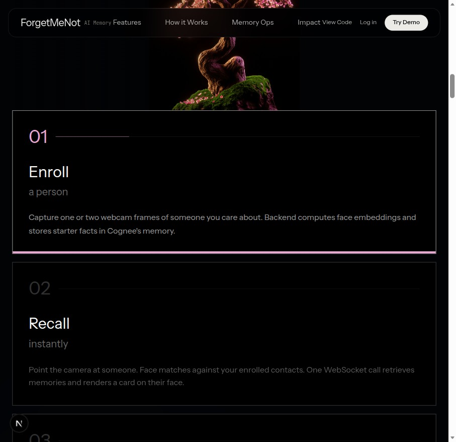

Page 01
Why we built ForgetMeNot
There is a specific moment that families living with dementia describe over and over. Someone walks into the room. The person with dementia looks up, and there is a beat of silence where recognition should be. A granddaughter becomes a polite stranger. A husband of forty years gets a wary nod. Both people feel it, and both people pretend they didn't.
Caregivers work around this with whispered introductions at the door, name tags at family gatherings, photo albums with labels. These help, but they are all interventions that announce the problem. What families actually want is something quieter. A prompt that arrives at the exact moment it is needed, phrased the way a kind person would phrase it, visible only to the person who needs it.
That is ForgetMeNot. Point a tablet or laptop camera at the room. When a known face appears, the app anchors a small card next to it with one warm line: who this is, how they are connected, and one recent thing worth knowing. Not a dossier. One sentence.
The hard part is not the face recognition. Face recognition is a solved problem you can run in a browser tab. The hard part is the memory behind the face: accumulating notes, voice observations, and family-provided facts about a person over weeks, then compressing all of it into a single line that is accurate today. That is a memory problem, and it is the part of the product that Cognee carries.
Page 02
What is Cognee
If you have not met it before: Cognee is an open source AI memory engine. You hand it raw text, and it turns that text into two things at once: a knowledge graph of entities and relationships, and vector embeddings over the same content. Queries can then lean on both, graph structure for "who is connected to what" and semantic similarity for "what is this about."
Internally it runs what the Cognee team calls an ECL pipeline: Extract, Cognify, Load. Extract ingests and normalizes the raw data. Cognify is the interesting step, where an LLM decomposes the text into entities, relationships, and summaries and wires them into the graph. Load persists the graph and the embeddings into the configured stores so they are queryable.
From the application side you mostly touch three verbs:
rememberwrites new information into a dataset and triggers the ECL pipeline over it.recallanswers a natural-language question against everything remembered, using the graph and embeddings together.forgetdeletes remembered data.
Two more properties mattered for us. Cognee runs both as a hosted cloud service and self-hosted, so a hackathon project can start on the cloud tenant and a privacy-sensitive deployment can move on-premise without an API rewrite. And writes can run with a self_improvement flag, which has Cognee enrich the incoming data inline, connecting it to what it already knows rather than filing it as an isolated blob. For a product whose whole job is "know this one person deeply," that enrichment on write is exactly the right default.
Page 03
How the agent works
The live loop starts in the browser and ends in the browser, with Cognee in the middle. We were strict about one constraint from day one: no face image ever leaves the client.
The camera feed runs through face-api.js locally, on a detection loop at 2 fps. That is plenty for a person walking into a room, and it keeps a mid-range laptop cool. For each detected face, face-api.js produces a 128-float descriptor, a compact numerical fingerprint of the face. That descriptor, 128 numbers and nothing else, is what goes over a WebSocket to our FastAPI backend. Not a frame, not a crop, not a thumbnail.
The backend compares the descriptor against a local face registry (people.json) using euclidean distance. Distances below 0.55 count as a match; the threshold is exposed as a slider in the UI because lighting conditions vary a lot between a demo booth and a living room.
On a match, the backend asks Cognee what it knows:
snippets = await memory.recall(
f"what do I know about {person.name}",
dataset=person.id,
)
Cognee returns graph-and-embedding-backed snippets about that person. An LLM then compresses the snippets into one warm, present-tense line ("This is Maya, your granddaughter. She brought you tulips on Sunday."). The line travels back over the same WebSocket and the frontend anchors it as a card next to the matched face in the video feed.
Recall plus LLM synthesis is too slow to run per frame, so results are cached per person for 30 seconds. A face that stays in frame keeps its card without re-querying; a face that returns a minute later gets a fresh recall, which matters because the memory may have changed in between (more on distillation below).
The recall loop. Faces are embedded in the browser; only the 128-float descriptor crosses the network. Cognee answers the "who is this" question from the person's dataset.
Page 04
The memory pipeline
Recognition is the visible half of the product. The other half is how a person's memory gets built, sharpened, and, when needed, destroyed. Four mechanics.
Enroll
A caregiver enrolls a person from the camera: capture the face, store the descriptor in people.json, and seed one founding fact into Cognee ("Maya is Prem's granddaughter, she studies in Pune"). The seed fact goes in through remember, so it immediately becomes graph nodes and embeddings rather than a row in a table:
await memory.remember(
f"{name} is {relation}. {seed_fact}",
dataset_name=person_id,
self_improvement=True,
)
Observe
Between visits, caregivers add observations. Typed notes, or voice clips transcribed with Whisper via Groq's STT endpoint. Each observation is remembered into that person's dataset. Because writes run with self_improvement=True, Cognee enriches each note against what it already holds, so "she mentioned the tulips again" attaches to the earlier tulip fact instead of floating free.
Distill
Session notes are messy by nature. The Distill button hands a person's accumulated notes to an LLM, which condenses them into one clean, durable fact. That fact is written back into Cognee through the same remember path, and the person's 30-second reminder cache is invalidated. The next time their face appears, the recall is visibly sharper. This was our favorite demo moment: press Distill, walk back into frame, and the card's sentence has improved.
Forget
Forget deletes the person's entire Cognee dataset. This is not soft deletion or a hidden flag. The dataset is gone, and with it every note, every distilled fact, every graph node derived from them. For an app that holds intimate observations about a vulnerable person, we considered real deletion a requirement, not a feature.
The memory lifecycle. Observations accumulate, distillation compresses them into durable facts, and forget removes the entire per-person dataset.
Page 05
How we used Cognee, honestly
Here is the engineering story as it actually happened, because the detour taught us more than the plan did.
Our original design used Cognee's session_id for per-person isolation: one memory store, sessions as partitions, one session per enrolled person. It looked clean on paper. On 2026-07-03 we ran the design against a real Cognee Cloud tenant, and it fell over in two ways. Session-scoped recall never surfaced any content we had written; queries came back empty no matter how we phrased them. And forget had no session-scoped delete at all, which for us was disqualifying on its own, since per-person deletion is the privacy contract of the app.
Our session_id design died on contact with production. One dataset per person replaced it in an afternoon, and both recall and forget started working on the first try.
The fix was to stop partitioning inside a store and let Cognee's own dataset boundary do the isolation: one Cognee dataset per person, with dataset_name=personId. Recall against a person's dataset worked first try. Better, forget(dataset=personId) became a genuinely complete deletion, one call that removes everything the system ever learned about a person. The pivot deleted code and made the product's strongest promise easier to keep. We will take that trade every time.
Beyond the dataset model, three integration decisions shaped how Cognee sits in the codebase:
- Every write runs with
self_improvement=True, so enrichment happens inline at remember time instead of in a batch job we would have had to build. - Every Cognee call has a 45-second timeout backstop and degrades to a local JSON fallback. A live demo in front of judges must never hang on a network call. The app runs in three modes, cloud, local, and fallback, and the current mode is shown live as a status pill in the UI. Nothing is hidden; if we are degraded, the screen says so.
- A memory-ops log panel in the UI streams every
remember,recall, andforgetcall as it happens. Partly for debugging, mostly because watching the memory layer work is the most convincing part of the demo.
The uncomfortable summary: the feature we designed around did not survive its first real API call, and the feature we pivoted to worked immediately. Test against the real service before you architect around the docs.
Page 06
Product features
What is actually in the shipped app, as demoed:
- Live recognition cards anchored to faces in the camera feed, refreshed through the 30-second per-person cache.
- Enroll from camera, with a seed fact written straight into a fresh Cognee dataset.
- Text notes and voice notes per person; voice is transcribed by Whisper on Groq, with an OpenAI fallback, before being remembered.
- A Distill button that condenses a person's session notes into one clean fact and invalidates their cache.
- Forget person, which deletes their entire Cognee dataset.
- A match-threshold slider around the 0.55 euclidean default, for adjusting to room lighting.
- The memory-ops panel showing every remember, recall, and forget live, plus the cloud/local/fallback status pill.
- Google OAuth login.
- Bring-your-own-LLM-key at runtime, with multi-provider support: OpenAI, OpenRouter, Google Gemini, and Ollama for local models. Keys are stored encrypted at rest.
- Razorpay payments for the paid tier.
- Deployment on Render as a single Docker service, with FastAPI serving the Next.js static export alongside the API and WebSocket.

Page 07
Tech stack and architecture
The concrete pieces, named:
| Backend | Python 3.11, FastAPI on Uvicorn. A WebSocket endpoint at /ws drives the 2 fps recall loop; enroll, note, distill, and forget are REST endpoints with Pydantic models validating every payload. |
|---|---|
| Frontend | TypeScript and React on Next.js (App Router), styled with Tailwind CSS and Radix UI primitives, with face-api.js doing detection and embedding in the browser. Static-exported and served by FastAPI. |
| Memory | Cognee, one dataset per person. |
| Auth & payments | Google OAuth with session cookies; Razorpay for the paid tier. |
| Deployment | One Docker image on Render. One service to deploy, one URL to demo. |
The backend is deliberately small, six modules with sharp edges:
main.py | Wiring. Routes, WebSocket endpoint, static file serving. |
|---|---|
memory.py | The only file that talks to Cognee. remember, recall, forget, the 45 s timeout, and the JSON fallback all live here. |
registry.py | The face registry. Loads people.json, runs the euclidean match. |
llm.py | Prompts, the one-liner synthesis, distillation, and STT via Groq. |
auth.py | Google OAuth. |
payments.py | Razorpay. |
The memory.py boundary earned its keep during the session_id pivot. Rewriting the isolation model touched one file. Nothing in the recognition loop, the UI, or the LLM layer knew anything had changed.
Page 08
What we learned
Test against the real service early. Our session_id assumption survived a week of design discussion and about twenty minutes of contact with a production Cognee Cloud tenant. Reading docs is not testing. The afternoon we spent on live verification was the highest-leverage afternoon of the project.
Design for graceful degradation. The 45-second timeout and JSON fallback were built for demo insurance and turned out to be good product design. Caregiving software that hangs when the network flakes is worse than useless. The status pill keeps the degradation honest instead of silent.
Keep each integration behind one module. Because memory.py is the only file that imports Cognee, the biggest architectural change of the project was a one-file diff. This is old advice. It is old because it works.
Treat privacy as an architecture constraint, not a policy. "Faces never leave the browser" was decided before the first line of code, and it dictated the shape of everything downstream: the descriptor-only WebSocket protocol, the local registry, and the per-person dataset model that makes forget a real deletion. Bolting that on afterwards would not have been possible.
Page 09
Where this is headed: smart glasses
The tablet on the sideboard is the version we could build in a hackathon. The version we are building toward is glasses. Meta Ray-Ban first, because it already pairs the two things we need: a camera facing the room and an open-ear speaker next to the wearer.
The architecture was shaped for this from the start, even if we did not say so on page 3. The client's job is deliberately tiny: capture frames, embed them locally, open a WebSocket. Only the 128-float descriptor ever leaves the device. Any wearable with a camera and a network connection can play that role; nothing in the backend knows or cares whether the frames came from a laptop webcam or a pair of glasses.
What changes on glasses is the output. A card anchored to a face makes no sense when the display is your own eyes, so the reminder becomes audio-first: the same LLM one-liner, spoken quietly through the open-ear speaker as the person approaches. The recall loop, the per-person cache, and the distill pipeline all carry over unchanged, and Cognee stays the memory layer regardless of which device is wearing it.
Page 10
Credits and thanks
Thanks to the Cognee team for the memory engine this product stands on. The dataset model gave us per-person isolation and honest deletion, self_improvement gave us enrichment for free, and recall quality is what makes the reminder cards worth reading. The open source repo and the cloud tenant both held up under a hackathon's worth of abuse.
Thanks to WeMakeDevs for running the hackathon that pushed this from an idea we kept talking about into a thing that works.
And thanks to the projects we built on: face-api.js for making in-browser face embedding a two-day integration instead of a research project, FastAPI for the cleanest WebSocket ergonomics in Python, and Next.js for a frontend we could export statically and serve from the same container as the API.
ForgetMeNot exists because the memory layer already did. We wrote the loop around it.